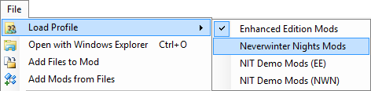
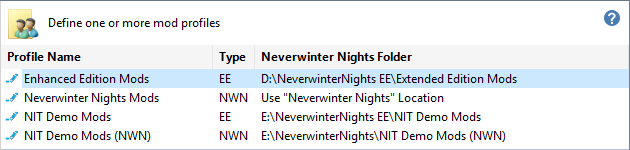

A Profile defines a set of Mods associated with a Neverwinter Nights Installation or an Enhanced Edition User Files folder. The Installer Tool automatically defines Profiles for Neverwinter Nights (NWN) and the Enhanced Edition (EE).
You don't need to define additional Profiles unless you want to use multiple NWN Installation or EE User Files folders. However, you might want use different installations when developing or testing new Mods and don't want it to interfere with your normal gaming environment.
Use Load Profile from the File menu to switch between different Profiles.

Use the Profiles page in Advanced Settings to create or change Profiles.

See Play Neverwinter Nights for information about playing Neverwinter Nights with different Profiles.
Create a Neverwinter Nights folder
Specify a Neverwinter Nights folder